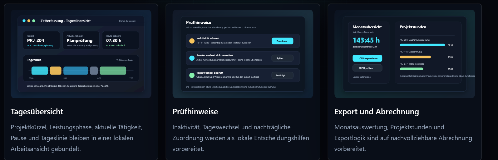

Empfohlen
Windows-Setup
Geführte Installation mit Startmenü-Eintrag und sauberer Deinstallation.
Setup direkt ladenÖffentliche Windows-Testversion · Teststand 4
Lokale Arbeitszeit, Projekte, Tätigkeiten und Prüfhinweise nachvollziehbar erfassen. Bestätigte Prüfzeiträume erscheinen jetzt nachvollziehbar in Zeiteinträgen und Auswertungen.
Aktueller Teststand
Beide Pakete enthalten denselben Funktionsstand. Das Setup installiert die Anwendung unter Windows; Portable läuft aus einem entpackten Ordner.
Empfohlen
Geführte Installation mit Startmenü-Eintrag und sauberer Deinstallation.
Setup direkt ladenOhne Installation
Archiv entpacken und die Anwendung kontrolliert aus dem Zielordner starten.
Portable direkt ladenNeu in Teststand 4
Einen Hinweis als geprüft bestätigen und anschließend in den Zeiteinträgen wiederfinden. Der ursprüngliche PC-Zeitblock bleibt bestehen.
Pause, Privat und unklare Gründe zeigen keine Projektzuordnung. In der Tätigkeit steht die getroffene Entscheidung.
Bestätigte Prüfzeiträume in Tag, Woche oder Monat öffnen und bei Bedarf wieder in den Prüfstatus zurücksetzen.
Einblick
Tagesübersicht, lokale Prüfhinweise und Abrechnung bleiben klar getrennt.

Vor dem Test
Integrität
Die Prüfsummen ermöglichen den Abgleich der heruntergeladenen Dateien.
4BC3F6290633B26401C25C5CFC2D3EB572EA0036B310092A6A8796A2EE3DD6ED
522CE94105894E0F4385C0A338B96E773D76BD6A21670C6BD3B8F0271B55030C
Details und ältere Stände
Änderungstexte, Dateien und Prüfsummen bleiben direkt bei jedem GitHub Release erhalten.